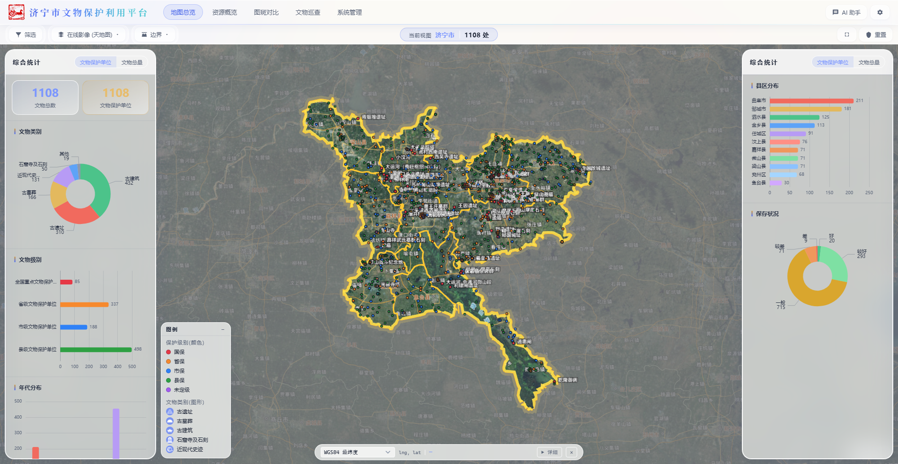
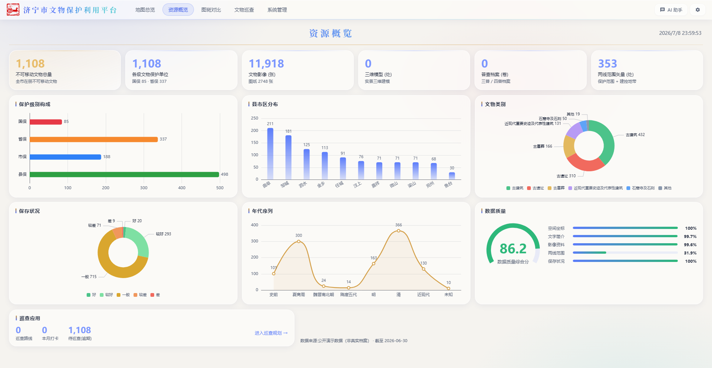
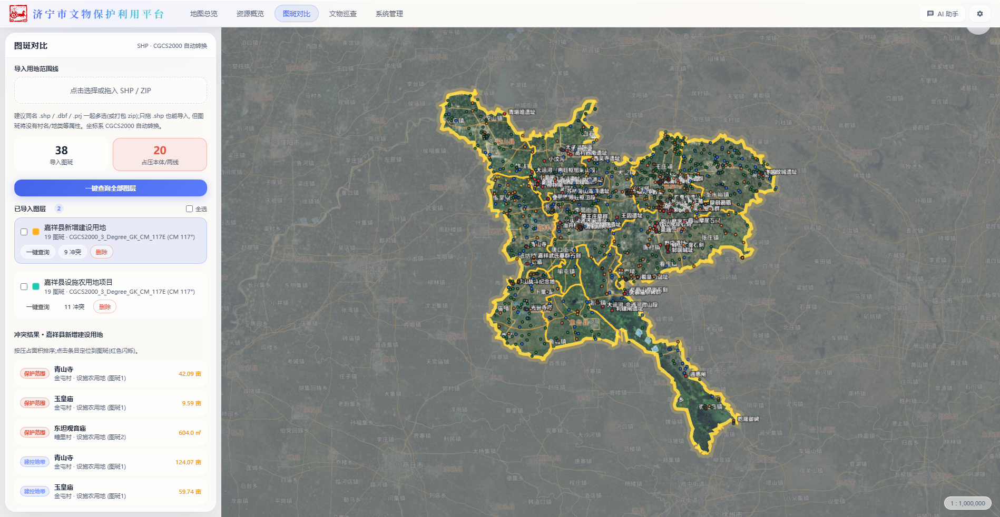
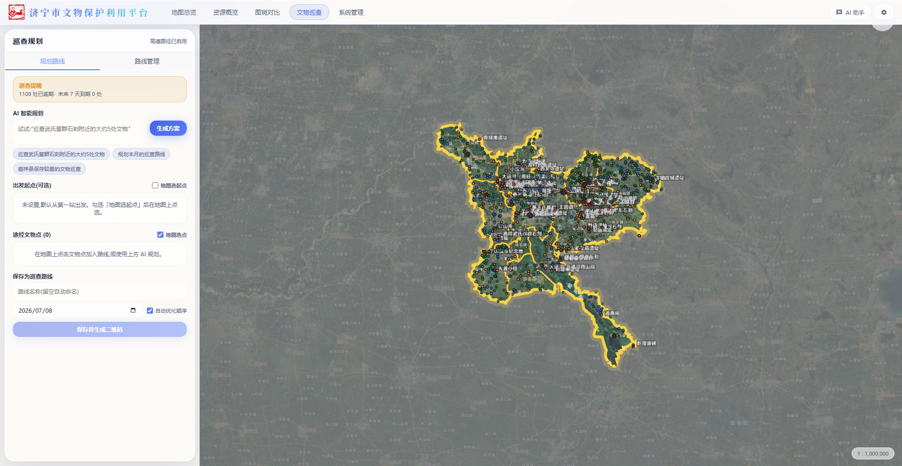
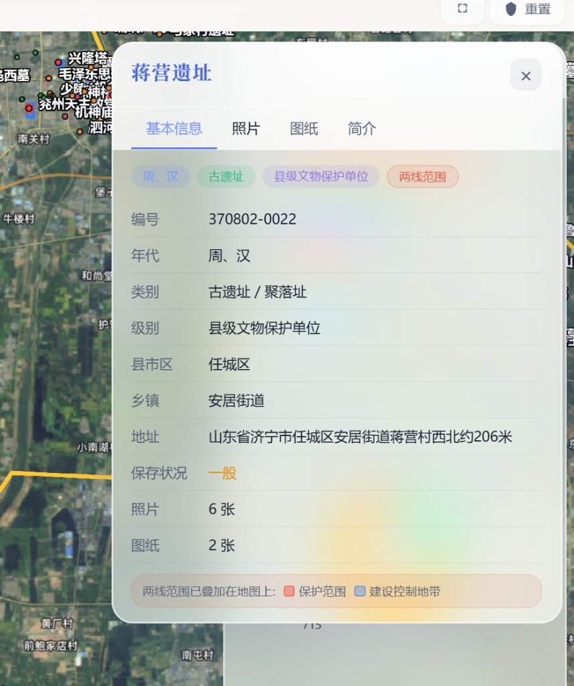
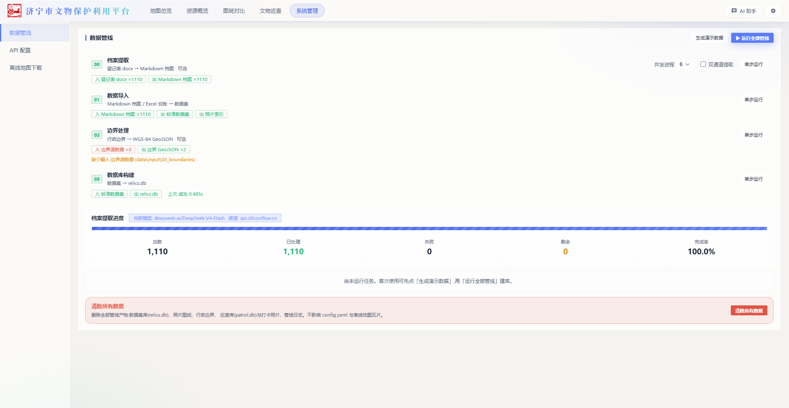

济宁市文物保护利用平台
孔孟之乡 · 运河之都 —— 文物数字化保护与利用一体化解决方案
系统功能与技术路线介绍
2026 年 7 月
济宁市文物保护利用平台
目 录
CONTENTS
壹
功能简介
地图总览 · 资源概览 · 图斑对比 · 文物巡查 · AI 助手 · 系统管理,六大功能模块全景演示
贰
技术路线
单机一体化架构 · 四步数据管线 · 空间数据库 · 前后端技术选型与关键技术实现
叁
下步规划
短期夯实质量 · 中期业务深化 · 远期区域推广,平台演进路线图
济宁市文物保护利用平台
第一部分
功能简介
一张图掌握全市文物 · 六大模块覆盖保护利用全流程
济宁市文物保护利用平台
功能简介
平台总览
全市不可移动文物"一张图"数字底座 · 单机部署 · 断网可用 · 数据不出本机
1,108不可移动文物(处)
11,918文物影像(张)
2,748测绘图纸(张)
353两线范围矢量(处)
地图总览资源概览图斑对比文物巡查AI 助手系统管理
六套主题皮肤移动端扫码巡查离线瓦片缓存一键启动 start.bat
济宁市文物保护利用平台
功能简介
地图总览
Cesium 三维地球 · 全市文物空间分布一屏尽览
- 智能点位渲染:远视角按保护级别着色,近视角自动切换"级别色 + 类别剪影"徽章,万级点位流畅呈现
- 多维筛选:类别 / 级别 / 县区乡镇 / 年代 / 保存状况 / 关键词即筛即显,统计图点击联动地图
- 两线范围:保护范围(红)与建控地带(蓝)随缩放自动隐现,选中文物自动叠加
- 多源底图:天地图 / 高德在线影像与矢量,离线瓦片一次下载永久可用
- 专业坐标:WGS84 / CGCS2000 / 高斯-克吕格实时读数与互转

地图总览 · 市域聚焦 + 双侧统计面板
济宁市文物保护利用平台
功能简介
资源概览
数据大屏 · 家底一目了然
- 六项核心指标:文物总量、保护单位、影像、三维模型、普查档案、两线矢量
- 多维统计图:保护级别构成、县市区分布、文物类别、保存状况、年代序列
- 数据质量评分:空间坐标 / 文字简介 / 影像资料 / 两线覆盖完整度综合打分
- 图表即筛选:点击任意图表区块,跳回地图页并自动应用对应筛选
- 主题自适应:图表配色随六套主题实时联动,汇报大屏随心切换

资源概览大屏 · 数据质量综合评分
济宁市文物保护利用平台
功能简介
图斑对比
建设用地 SHP 一键导入 · 文物占压自动核查 —— 服务基本建设考古前置
- SHP 直接导入:拖入自然资源部门提供的用地范围线(.shp/.zip),CGCS2000 高斯-克吕格坐标自动识别反算,无需第三方软件转换
- 一键占压查询:R-Tree + 空间求交,秒级判定图斑是否压占文物本体 / 保护范围 / 建控地带,压占面积自动换算亩
- 冲突清单定位:按压占面积排序,点击条目地图飞行定位并红色闪烁提示
- 批量管理:多图层同时导入、全选批量删除、独立显隐控制

图斑对比工作台 · 38 个图斑自动核查,20 处占压冲突秒级检出
济宁市文物保护利用平台
功能简介
文物巡查
AI 规划 + 移动打卡 + 智能核验,巡查工作闭环管理
- AI 智能规划:一句话生成巡查方案,如"巡查嘉祥县保存较差的 5 处文物",按保存状况自动排定巡查频次
- 真实路径:接入高德驾车路线,里程与耗时精确估算,途经点最近邻排序
- 扫码巡查:路线生成二维码,手机扫码免登录打开 H5 巡查页
- 到场核验:打卡照片自动提取 EXIF GPS,与文物坐标比对判定是否到场
- AI 照片评估:视觉大模型对比历史照片,自动评估保存状况变化并生成报告

巡查规划工作台 · 巡查提醒与 AI 方案生成
济宁市文物保护利用平台
功能简介
AI 助手 · 交互体验
大模型深度融合 · 六套主题皮肤 · 现代交互细节
- 台账问答:基于全量文物档案的流式问答,"哪些国保单位保存较差?"即问即答
- 回答即操作:答案中的文物名、县区、数量均可点击,直接驱动地图筛选与定位
- 六套主题:深墨蓝 / 经典亮白 / 藏青政务 / 青碧 / 胭脂红 / 琉璃玻璃拟态,一键切换、全站联动
- 可拖拽详情:文物详情卡片自由拖动、缩放,位置记忆,查图对照两不误
- 全程降级可用:未配置 AI Key 时自动切换规则引擎,核心功能不受影响

琉璃玻璃拟态主题 · 可拖拽文物详情面板
济宁市文物保护利用平台
功能简介
系统管理
数据管线可视化 · 非技术人员也能维护
- 可视化管线:档案提取 → 数据导入 → 边界处理 → 数据库构建,四步流水线网页端一键运行、实时日志
- 进度追踪:LLM 档案提取支持断点续传与双通道并行,完成率实时展示
- API 配置热更新:大模型 / 高德 / 天地图 Key 网页端保存即生效,无需重启
- 离线地图下载:框选区域批量下载瓦片,支持断网环境使用
- 安全防线:清库操作二次口令确认,操作审计全程留痕

系统管理 · 数据管线一键运行
济宁市文物保护利用平台
第二部分
技术路线
单机一体化 · 轻量可靠 · 面向基层文保单位的务实架构
济宁市文物保护利用平台
技术路线
总体架构
一个 Python 进程 = API 服务 + 前端托管 + 瓦片代理 · 双击即用、断网可用、数据不出本机
数据输入
四普登记表 docx乡镇归档的普查档案
台账 xlsx / 名单市保县保名录
行政边界 SHP县 / 乡镇 / 村三级
两线范围 GeoJSON测绘成果挂接
→
数据管线
step00 档案提取LLM 把 docx 转结构化 Markdown
step01 标准化导入坐标转换 · 媒体归位 · 两线挂接
step02 边界处理GK 反算 · GCJ 纠偏 → WGS84
step03 建库SQLite 全量重建(幂等)
→
数据层
relics.dbR-Tree 空间索引 + FTS5 全文检索
patrol.db巡查独立库,重建不丢历史
文件资产照片 / 图纸 / 边界 / 瓦片缓存
→
FastAPI 后端
7 组路由文物 / 统计 / 问答 / 巡查 / 边界 / 坐标系 / 管理
服务层AI · 高德 · 巡查 · EXIF 核验
瓦片代理LRU + 磁盘缓存 · 限流去重
外部 API(可选)SiliconFlow / DeepSeek / 高德 / 天地图
→
前端呈现
React 18 + Cesium地图总览 · 图斑对比 · 巡查
ECharts 大屏资源概览 · 主题联动
移动端 H5扫码免登录巡查打卡
济宁市文物保护利用平台
技术路线
技术选型
每一项选择都服务于"基层一台电脑就能跑"
| 层次 | 选型 | 选型理由 |
|---|
| 存储 | SQLite WAL + R-Tree + FTS5 | 零运维单文件库;空间索引与中文 trigram 全文检索开箱即用 |
| 后端 | FastAPI + Uvicorn | 异步支撑瓦片代理与 SSE 流式问答;自动生成 API 文档 |
| 前端 | React 18 + TypeScript + Vite 5 | 组件化拆分六大功能页;构建产物直接由后端托管,单端口部署 |
| 地图引擎 | Cesium 1.125 | 同一引擎覆盖 2.5D 地图与 3D Tiles 三维模型;瓦片走后端代理 |
| 状态管理 | Zustand 5 | 轻量切片式 store,筛选 / 图层 / 巡查 / 图斑各域独立 |
| 空间分析 | Shapely 2 + pyshp + 自研坐标引擎 | SHP 解析、高斯-克吕格反算、STRtree 空间求交,图斑占压秒级判定 |
| AI 集成 | OpenAI 兼容接口 统一入口 | 档案提取 / 问答 / 巡查规划 / 照片评估共用一套模型配置,均有无 Key 降级 |
济宁市文物保护利用平台
技术路线
关键技术实现
把专业 GIS 能力封装成"零门槛"体验
LLM 档案数字化流水线
四普 docx 登记表经大模型提取为结构化档案:断点续传、双通道并行(速度翻倍)、产物完整性校验、优雅停止;1108 处文物档案完成率 100%
空间检索与占压分析
R-Tree 视口查询支撑地图流畅拖动;图斑对比用 STRtree + 空间求交,1200+ 图斑 × 796 个两线面秒级完成占压判定
多坐标系自动换算
自研 CGCS2000 / 高斯-克吕格正反算引擎(全国范围 < 1mm):SHP 导入自动识别 .prj 投影、带号剥离、中央经线推断,测绘成果零转换直接用
瓦片代理与离线地图
天地图 / 高德瓦片统一代理:内存 LRU + 磁盘永久缓存(同区域只耗一次配额)、并发限流、Key 轮转;支持整区域离线下载
AI 全链路降级策略
问答 / 规划 / 照片评估每处都有规则引擎兜底:不配 Key 也能用,配了 Key 体验更好;Key 网页端保存即热生效
主题化设计系统
CSS 设计令牌 + color-mix 自动派生色板,六套主题(含琉璃玻璃拟态)一处定义全站联动,ECharts 与 Cesium 地球底色运行时跟随
济宁市文物保护利用平台
第三部分
下步规划
夯实基础 · 深化业务 · 面向推广
济宁市文物保护利用平台
下步规划
演进路线图
从"可用"到"好用",从"一市"到"多域"
短期
1 - 3 个月 · 夯实质量
- 质量门禁:前端单元测试 + ESLint 接入 CI,与既有后端 pytest 联动
- 图斑对比增强:占压核查结果一键导出 Word / PDF 报告,直接用于考古前置审批意见
- 性能优化:点位服务端聚簇抽稀,支撑数据量向万级增长
- 档案抽检:LLM 提取结果置信度评分,低分档案自动标记人工复核
中期
3 - 12 个月 · 深化业务
- 四普成果全量接入:普查新发现文物增量入库,历史版本对比
- 多人协同:基于既有审计日志与乐观锁,开放在线编辑与审核工作流
- 巡查深化:巡查台账统计分析、逾期预警推送、无人机航拍影像挂接
- 变化监测:定期卫星影像叠加比对,两线范围内新增建设自动预警
远期
1 年以上 · 面向推广
- 多区县推广:换地区只改配置与数据不动代码,形成可复制的县域方案
- 平台互联:与省市文物数据平台对接,数据上报与共享交换
- AI 深化:文物知识库语义检索、保护规划辅助编制、公众展示问答
- 活化利用:面向公众的文物地图小程序与研学路线推荐
让文物"活"在数字时代
济宁市文物保护利用平台 · 谢谢观看
孔孟之乡 · 运河之都